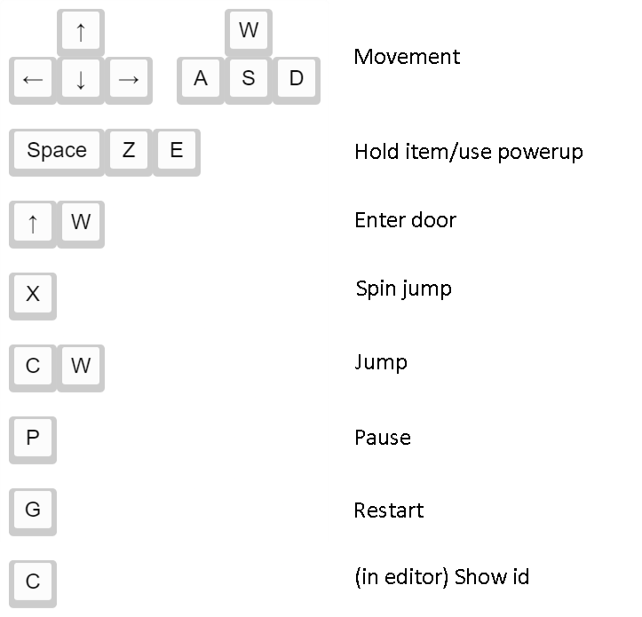

Other places to play the game
You can find previous versions here
Controls:
Share your levels here https://scratch.mit.edu/discuss/topic/400334/
Go here to see how to use the editor https://scratch.mit.edu/discuss/topic/298548/?page=1
If you have any questions, you can ask on Scratch
Here's the tables and tools for ids
Website source code is available on GitHub